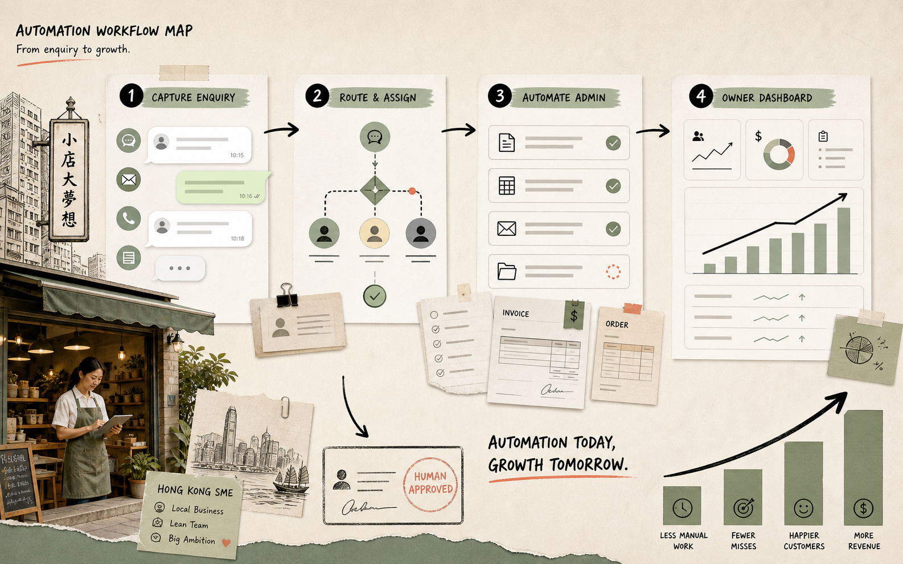
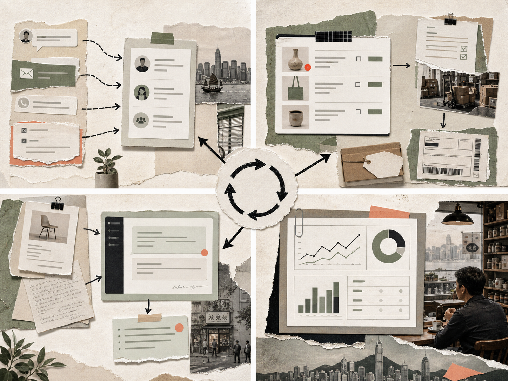
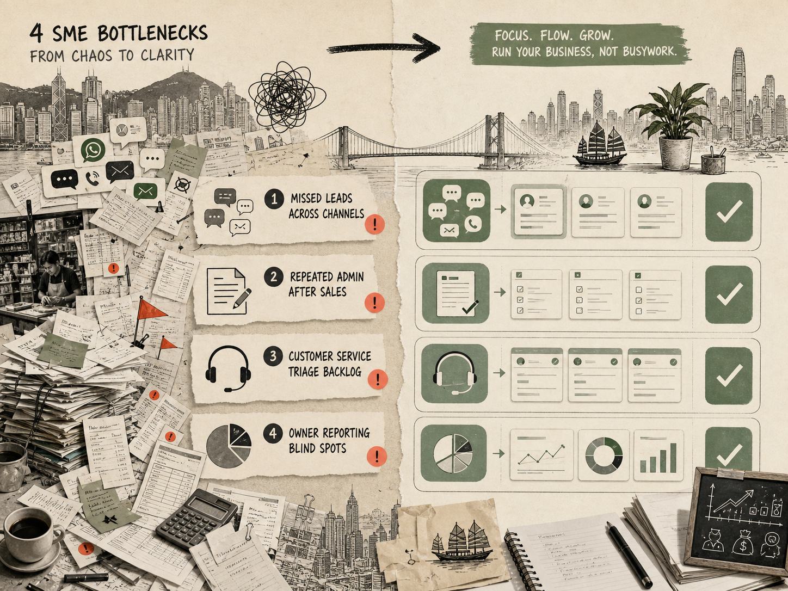
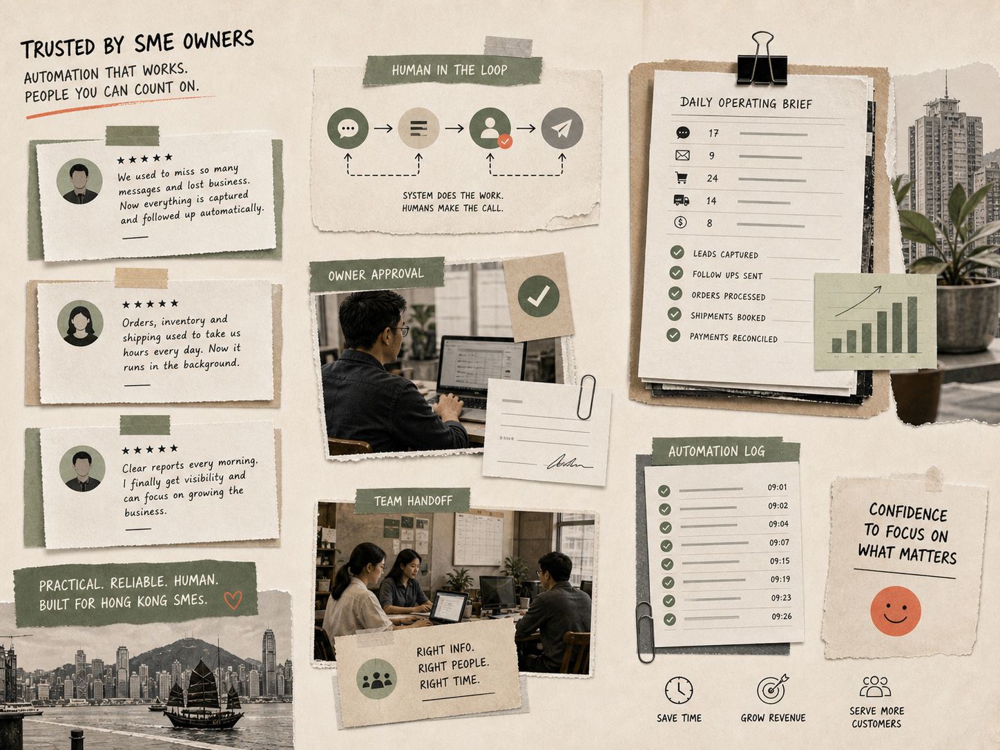

Automation that helps small teams grow without adding admin.
Zoomicc helps Hong Kong SME owners increase business efficiency by setting up automated business flows across sales, operations, ecommerce, reporting, and customer follow-up. We build with Make, n8n, Agentic AI, and Microsoft Power Automate.
Click a workflow. Watch the business system become lighter.
A small automation should change visible operating pressure: fewer missed leads, faster admin, clearer owner decisions. This frame shows the shape of that change without pretending every business has the same numbers.
CaptureWhatsApp, form, ad lead
RouteAssign owner and SLA
ActDraft reply and reminder
MeasureDaily lead status
3hreply lag reduced
1owner per lead
6weekly touchpoints
Automation is not a dashboard decoration. It turns scattered enquiry moments into owned next actions, then gives the owner a clear view of what is still open.

Workflow mapOriginal collage
II.
About Zoomicc / No. 02
Built by operators who know where SME work gets stuck.
Zoomicc is led by Agent T and Agent M: a marketing operator and an automation/ecommerce operator. The work is deliberately practical: map the messy business flow, automate the repeatable parts, keep humans in control of judgment.
Agent TCrypto marketing operator
8 years of campaign, community, funnel, and growth operations experience. Focus: lead quality, customer journeys, conversion loops, and follow-up cadence.
08 yearsMarketing systems
Agent MAI automation and ecommerce expert
10 years running ecommerce operations. Focus: order flow, fulfilment handoffs, admin reduction, AI-assisted service, and tool integration.
10 yearsEcommerce ops
02 / Audit deskPaper system
III.

03 / Capability mapSystems layer
Offer services · Nº 03
Four services for practical business automation.
Each offer can stand alone, but the useful work happens when they connect: intake becomes clean data, clean data triggers decisions, and decisions become customer-facing action.
01Intake
Lead and message routing
Capture web forms, WhatsApp enquiries, email requests, and ad leads into one queue with assignment, SLA, and follow-up rules.
02Operations
Order and admin flows
Generate invoices, update inventory, reconcile sheets, notify teams, and reduce the repetitive admin hidden inside every sale.
03AI agents
Classification and drafting
Use Agentic AI for tagging, summarising, routing, drafting replies, preparing quotes, and escalating edge cases to humans.
04Reporting
Daily operating visibility
Produce lightweight dashboards and daily briefs so owners can see bottlenecks before the team loses another afternoon.
IV.
Problem solving · Nº 04
Four bottlenecks Zoomicc turns into managed systems.
Sales

Nº 01Problem
Leads vanish between apps
WhatsApp, forms, email, and ad leads arrive everywhere. Zoomicc creates one intake lane with owner, SLA, and next action.
Admin
Nº 02Problem
Admin repeats after every sale
Invoices, stock sheets, courier updates, and payment notes become a controlled sequence instead of manual copy-paste.
CX
Nº 03Problem
Messages need triage first
AI tags intent, urgency, product line, and handoff owner so humans reply faster with context already prepared.
Reports

Nº 04Problem
Owners discover issues too late
A daily operating brief surfaces open tasks, stuck orders, urgent messages, and bottlenecks before the day is lost.
V.
Workflow · Nº 05
A four-step workflow from messy handoff to monitored system.
Click each step to see the build progress. The same four-stage loop is used for small fixes and full operating systems.
01
Audit
Pick one painful process and map the trigger, owner, data source, exception, and desired customer response.
02
Wire
Connect the first Make, n8n, Power Automate, or AI-agent flow around the systems your team already uses.
03
Guard
Add logs, fallback alerts, approval gates, and human review points so the automation is safe to run daily.
04
Operate
Hand over the flow diagram, train the team, and keep a maintenance rhythm for changes, errors, and improvements.
VI.
Mock case studies / No. 06
Two mock cases to show the shape of the work.
These are placeholder cases for the first pass. They show the kind of business flow Zoomicc can build; real client details can replace them later.
“Zoomicc made our follow-up feel calm: the team knew who owned each request, what was waiting, and what had already moved.”
Pilot client note, Hong Kong SME
Make
n8n
Agentic AI
Power Automate
Microsoft 365
07 / Operating noteHuman in loop
VIII.
Contact us / No. 08
Send one messy workflow on WhatsApp.
Tell us the process that wastes the most time: lead follow-up, order admin, quoting, reporting, approvals, or customer service. Zoomicc will map a practical first automation path.